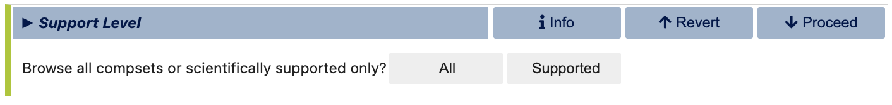
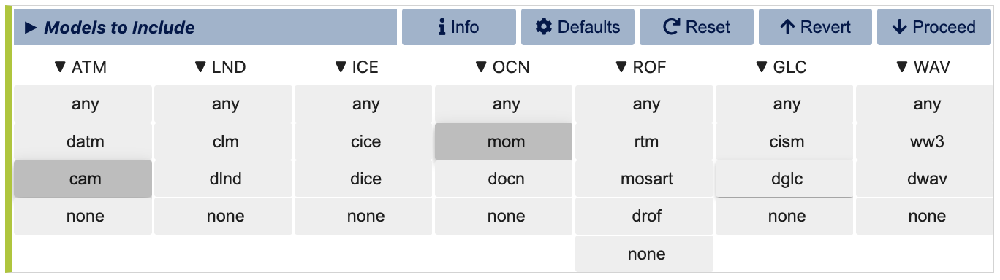
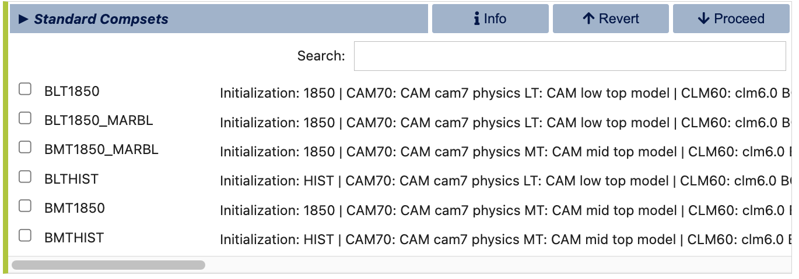
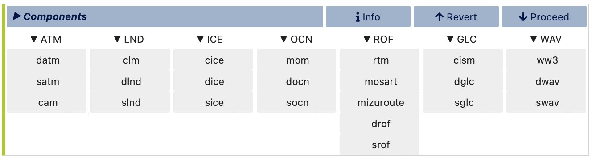
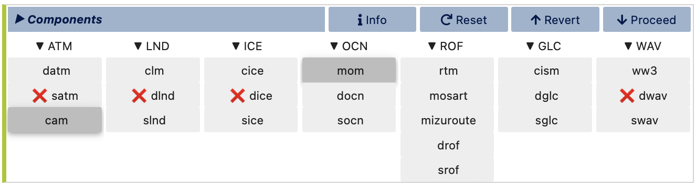
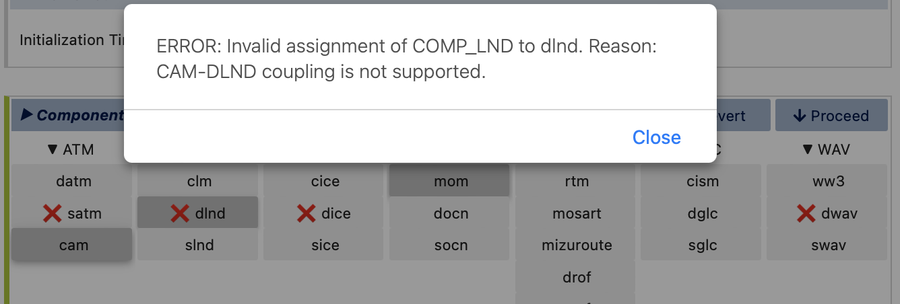
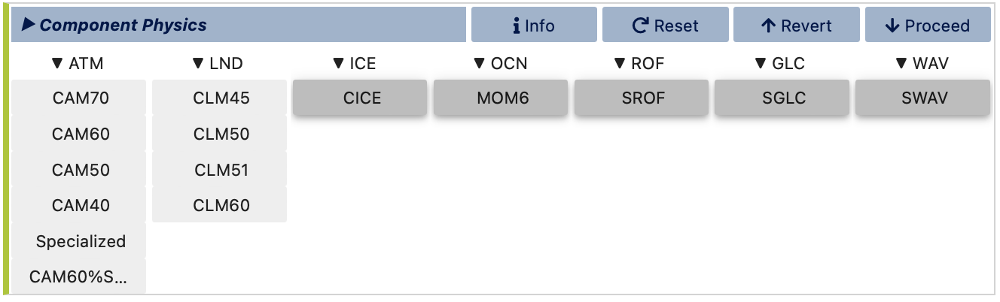
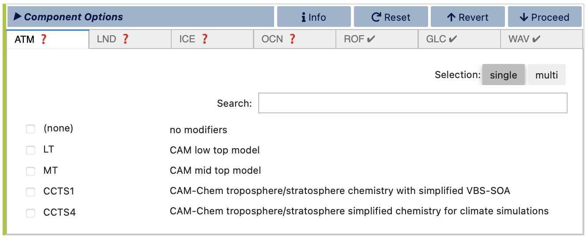

Stage 1/3: Compset
In this stage, the component set (compset), i.e., the collection of models (cam, clm, mom, etc), physics (CAM70, CLM50, MOM6, etc), and component options. e.g., LT (low top), SP (satellite phenology), MARBL-BIO, etc. are determined. You’ll start by choosing between the Standard compset mode, which provides predefined and stable CESM configurations, and the Custom compset mode, which allows for more tailored combinations for unique experiments.

Standard Compsets
Support Level: You can select from a list of all standard compsets or only those that are scientifically supported. Supported compsets have been validated by CESM developers, ensuring they produce scientifically vetted results. These are typically recommended for production runs. The All option, however, includes experimental compsets that may not be validated but can be useful for testing and development. Selecting a supported compset ensures that you are working with configurations approved for stability and accuracy, while the All option offers broader but potentially unstable options for specialized needs.
Models to Include: If you choose the Supported option, a list of scientifically validated compsets will appear for you to choose from. However, if you choose the All option, you’ll be presented with a model matrix to refine the list of compsets displayed. This matrix allows you to specify which model components you want to include. For instance, if you select cam as the atmosphere model and mom as the ocean model, the list will filter down to include only those compsets that incorporate both. If you’re flexible with certain components, you can select any for those classes, or click the Defaults button in the Stage top bar to apply typical defaults for all components, streamlining your selection. This feature is particularly useful if you’re unsure about specific settings or wish to adhere to commonly used configurations.
Standard Compsets List: After refining your options by making a selection in each column of the matrix, visualCaseGen will display a list of matching compsets. Each compset is labeled with an alias and incorporates an initialization time and a short description of the included models, providing a snapshot of each configuration. To narrow down the list further, you can use the search box above the list. Typing keywords in the search box will display all compsets containing one or more of the search terms. For precise filtering, use double quotes around terms for exact matches. This flexibility makes it easy to locate specific compsets or explore different configurations to find the most suitable one for your simulation needs.

After selecting a compset, visualCaseGen will guide you to the next primary stage, Grid, where you’ll select a model resolution compatible with your chosen compset.
Custom Compsets
Note
If you initially selected the Standard compset mode, the Custom compset stages will not display, and instead visualCaseGen will proceed directly to the Grid stage. To switch to the Custom compset mode after already completing the Standard compset stages, you can click Revert buttons to navigate back to the selection of configuration mode.
If you prefer to build a custom compset, visualCaseGen provides a step-by-step process, starting with the initialization time for your experiment. This choice impacts the initial conditions and forcings for your simulation. You can choose from:
1850: Represents pre-industrial conditions and is suitable for fixed-time-period runs, such as for model spin-ups.
2000: Represents modern-day conditions, also appropriate for fixed-period simulations.
HIST: Represents a historical run setup, which covers transient simulations (e.g., from 1850 through 2015) that evolve with changing conditions over time.

Once you’ve selected the initialization time, visualCaseGen will prompt you to select the models for each component class. You’ll see options that include active models, data models (prefixed with d, like datm), and stub models (prefixed with s, like sice). Data models perform the basic function of reading preexisting forcing data, modifying that data, and then sending it to active models via the coupler. Stub models act as placeholders required by the CESM coupler infrastructure but have no impact on the simulation. This variety allows you to configure a custom compset that includes as many or as few active components as desired, depending on the specific goals of your simulation.

As you make selections in this stage and elsewhere, visualCaseGen will guide you by crossing out incompatible options, helping to prevent invalid configurations. For example, if you select cam for the atmosphere and mom for the ocean, the GUI will disable several other model options that are incompatible with this combination. This real-time feedback keeps your configuration process streamlined and ensures that all selected options work together compatibly.

At any stage, you can click on any crossed-out option to view a brief explanation of why it’s incompatible with your current selections for additional guidance.

After choosing your models, you’ll proceed to select the physics options for each. The physics settings determine the complexity of each model component and impact computational requirements. Higher version numbers indicate newer and more complex physics for a given model. Depending on the model, you may have multiple physics options available. For example, cam and clm have multiple physics options, while other models may offer only one, in which case it will be selected by default. Since each physics option provides different levels of model complexity, the selection should be based on the specific requirements of your simulation. Refer to the individual model documentations for more information on the available physics options.

The final part of custom compset creation is selecting optional physics modifiers. Modifiers allow additional adjustments to physics and parameter settings, offering further customization to meet modeling requirements and goals. Each component class is represented in individual tabs within this stage. You can switch between tabs to select modifiers or opt out of a modifier by choosing (none). Tabs with available modifiers will display a red question mark until a selection is made. While you can select multiple modifiers for a single component class, be cautious: visualCaseGen does not verify compatibility between multiple modifiers within a single component, so it’s advisable to consult CESM documentation or model experts if you’re using complex modifier combinations.

Once you’ve completed the selection of models, physics, and optional modifiers, visualCaseGen will automatically advance to the next main stage, Grid, where you’ll select a model resolution compatible with your chosen compset.